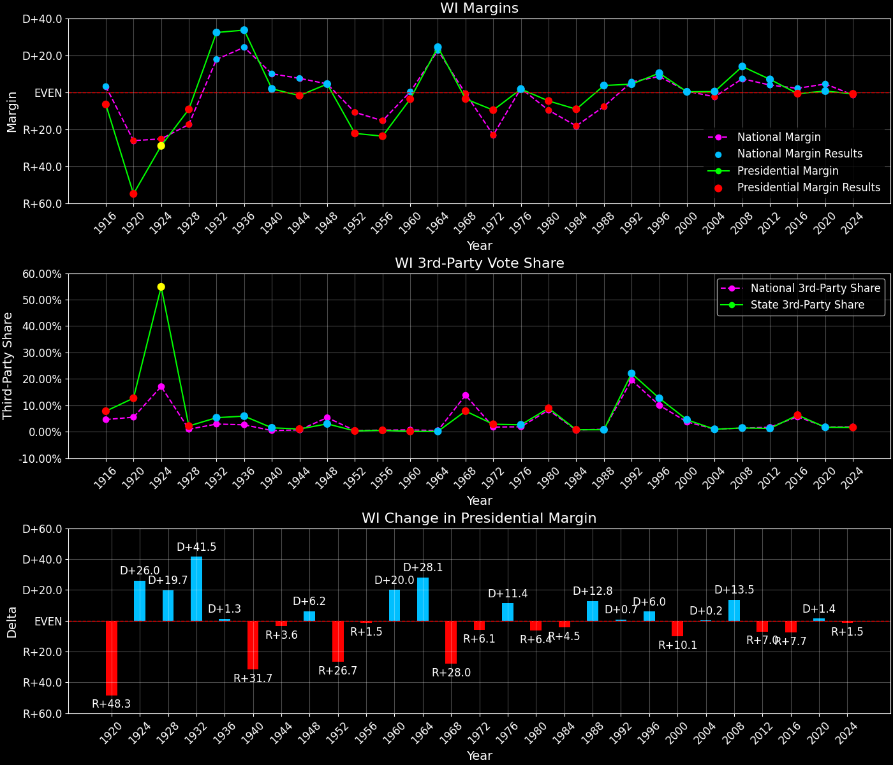
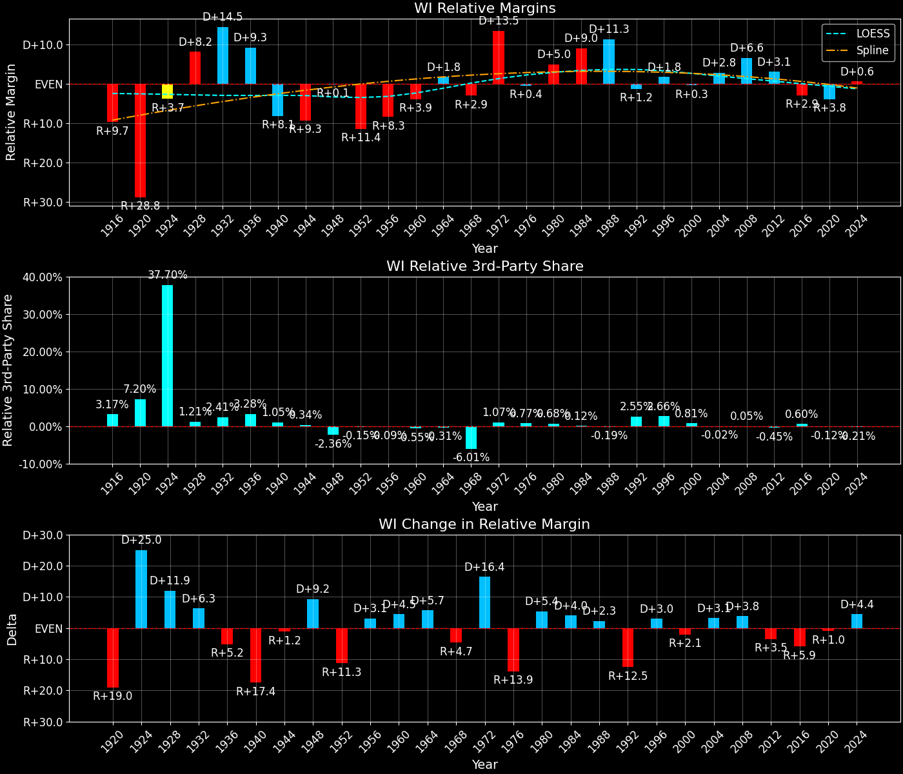

Wisconsin (WI) — Statewide

Margins · 3rd-Party share · Pres. deltas

Relative margins · Relative 3rd-Party · Rel. deltas
Wisconsin (WI) — Total Data
| Year | D | R | State Margin | Nat. Margin | Rel. Margin | Total votes | EVs |
|---|---|---|---|---|---|---|---|
| 1964 | 1,050,424(62.1%) | 638,495(37.7%) | D+24.3 | D+22.6 | D+1.8 | 1,691,815 | 12 |
| 1968 | 748,804(44.3%)(Δ -301,620) | 809,997(47.9%)(Δ 171,502) | R+3.6(Δ R+28.0) | R+0.7(Δ R+23.3) | R+2.9(Δ R+4.7) | 1,691,538 | 12 |
| 1972 | 810,174(43.7%)(Δ 61,370) | 989,430(53.4%)(Δ 179,433) | R+9.7(Δ R+6.1) | R+23.1(Δ R+22.4) | D+13.5(Δ D+16.4) | 1,852,890 | 11 |
| 1976 | 1,040,232(49.5%)(Δ 230,058) | 1,004,987(47.8%)(Δ 15,557) | D+1.7(Δ D+11.4) | D+2.1(Δ D+25.2) | R+0.4(Δ R+13.9) | 2,101,336 | 11 |
| 1980 | 981,584(43.2%)(Δ -58,648) | 1,088,845(47.9%)(Δ 83,858) | R+4.7(Δ R+6.4) | R+9.7(Δ R+11.8) | D+5.0(Δ D+5.4) | 2,273,221 | 11 |
| 1984 | 995,847(45.0%)(Δ 14,263) | 1,198,800(54.2%)(Δ 109,955) | R+9.2(Δ R+4.5) | R+18.2(Δ R+8.5) | D+9.0(Δ D+4.0) | 2,212,016 | 11 |
| 1988 | 1,126,794(51.4%)(Δ 130,947) | 1,047,499(47.8%)(Δ -151,301) | D+3.6(Δ D+12.8) | R+7.7(Δ D+10.5) | D+11.3(Δ D+2.3) | 2,191,608 | 11 |
| 1992 | 1,041,066(41.1%)(Δ -85,728) | 930,855(36.8%)(Δ -116,644) | D+4.4(Δ D+0.7) | D+5.6(Δ D+13.3) | R+1.2(Δ R+12.5) | 2,531,114 | 11 |
| 1996 | 1,071,971(48.8%)(Δ 30,905) | 845,029(38.5%)(Δ -85,826) | D+10.3(Δ D+6.0) | D+8.5(Δ D+3.0) | D+1.8(Δ D+3.0) | 2,196,169 | 11 |
| 2000 | 1,242,987(47.8%)(Δ 171,016) | 1,237,279(47.6%)(Δ 392,250) | D+0.2(Δ R+10.1) | D+0.5(Δ R+8.0) | R+0.3(Δ R+2.1) | 2,598,607 | 11 |
| 2004 | 1,489,504(49.7%)(Δ 246,517) | 1,478,120(49.3%)(Δ 240,841) | D+0.4(Δ D+0.2) | R+2.5(Δ R+3.0) | D+2.8(Δ D+3.1) | 2,997,007 | 10 |
| 2008 | 1,677,211(56.2%)(Δ 187,707) | 1,262,393(42.3%)(Δ -215,727) | D+13.9(Δ D+13.5) | D+7.3(Δ D+9.7) | D+6.6(Δ D+3.8) | 2,983,417 | 10 |
| 2012 | 1,620,985(52.8%)(Δ -56,226) | 1,407,966(45.9%)(Δ 145,573) | D+6.9(Δ R+7.0) | D+3.9(Δ R+3.4) | D+3.1(Δ R+3.5) | 3,068,434 | 10 |
| 2016 | 1,382,536(46.5%)(Δ -238,449) | 1,405,284(47.2%)(Δ -2,682) | R+0.8(Δ R+7.7) | D+2.1(Δ R+1.8) | R+2.9(Δ R+5.9) | 2,976,150 | 10 |
| 2020 | 1,630,866(49.4%)(Δ 248,330) | 1,610,184(48.8%)(Δ 204,900) | D+0.6(Δ D+1.4) | D+4.5(Δ D+2.4) | R+3.8(Δ R+1.0) | 3,298,041 | 10 |
| 2024 | 1,668,229(48.7%)(Δ 37,363) | 1,697,626(49.6%)(Δ 87,442) | R+0.9(Δ R+1.5) | R+1.5(Δ R+5.9) | D+0.6(Δ D+4.4) | 3,422,918 | 10 |
Column explanations
- Δ
- Change (delta) in the value from the previous election year.
- Year
- Election year.
- D
- Number of votes for the Democratic candidate (raw count(pct%)).
- R
- Number of votes for the Republican candidate (raw count(pct%)).
- State Margin
- Margin between the two major-party candidates, including third-party votes ((D - R)/total).
- Nat. Margin
- The national presidential margin for that year, including third-party votes ((D_total - R_total)/total_votes).
- Rel. Margin
- The presidential margin relative to the national presidential margin (Margin - Nat. Margin).
- Total votes
- Total voter turnout or ballots cast (when provided).
- EVs
- Number of electoral votes allocated to this state or unit.
Wisconsin (WI) — Third-Party Data
| Year | D | R | Other votes | State 3rd-Party Share | 3rd-Party Nat. Share | 3rd-Party Rel. Share |
|---|---|---|---|---|---|---|
| 1964 | 1,050,424(62.1%) | 638,495(37.7%) | 2,896(0.2%) | 0.17% | 0.48% | -0.31% |
| 1968 | 748,804(44.3%)(Δ -301,620) | 809,997(47.9%)(Δ 171,502) | 132,737(7.8%) | 7.85% | 13.86% | -6.01% |
| 1972 | 810,174(43.7%)(Δ 61,370) | 989,430(53.4%)(Δ 179,433) | 53,286(2.9%) | 2.88% | 1.80% | 1.07% |
| 1976 | 1,040,232(49.5%)(Δ 230,058) | 1,004,987(47.8%)(Δ 15,557) | 56,117(2.7%) | 2.67% | 1.90% | 0.77% |
| 1980 | 981,584(43.2%)(Δ -58,648) | 1,088,845(47.9%)(Δ 83,858) | 202,792(8.9%) | 8.92% | 8.24% | 0.68% |
| 1984 | 995,847(45.0%)(Δ 14,263) | 1,198,800(54.2%)(Δ 109,955) | 17,369(0.8%) | 0.79% | 0.67% | 0.12% |
| 1988 | 1,126,794(51.4%)(Δ 130,947) | 1,047,499(47.8%)(Δ -151,301) | 17,315(0.8%) | 0.79% | 0.98% | -0.19% |
| 1992 | 1,041,066(41.1%)(Δ -85,728) | 930,855(36.8%)(Δ -116,644) | 559,193(22.1%) | 22.09% | 19.55% | 2.55% |
| 1996 | 1,071,971(48.8%)(Δ 30,905) | 845,029(38.5%)(Δ -85,826) | 279,169(12.7%) | 12.71% | 10.05% | 2.66% |
| 2000 | 1,242,987(47.8%)(Δ 171,016) | 1,237,279(47.6%)(Δ 392,250) | 118,341(4.6%) | 4.55% | 3.75% | 0.81% |
| 2004 | 1,489,504(49.7%)(Δ 246,517) | 1,478,120(49.3%)(Δ 240,841) | 29,383(1.0%) | 0.98% | 1.00% | -0.02% |
| 2008 | 1,677,211(56.2%)(Δ 187,707) | 1,262,393(42.3%)(Δ -215,727) | 43,813(1.5%) | 1.47% | 1.42% | 0.05% |
| 2012 | 1,620,985(52.8%)(Δ -56,226) | 1,407,966(45.9%)(Δ 145,573) | 39,483(1.3%) | 1.29% | 1.73% | -0.45% |
| 2016 | 1,382,536(46.5%)(Δ -238,449) | 1,405,284(47.2%)(Δ -2,682) | 188,330(6.3%) | 6.33% | 5.73% | 0.60% |
| 2020 | 1,630,866(49.4%)(Δ 248,330) | 1,610,184(48.8%)(Δ 204,900) | 56,991(1.7%) | 1.73% | 1.84% | -0.12% |
| 2024 | 1,668,229(48.7%)(Δ 37,363) | 1,697,626(49.6%)(Δ 87,442) | 57,063(1.7%) | 1.67% | 1.88% | -0.21% |
Column explanations
- Year
- Election year.
- D
- Number of votes for the Democratic candidate (raw count(pct%)).
- R
- Number of votes for the Republican candidate (raw count(pct%)).
- Other votes
- Number of votes for third-party (other) candidates (raw count(pct%)).
- State 3rd-Party Share
- Share of the vote received by third-party (other) candidates.
- 3rd-Party Nat. Share
- The national third-party share for that year (3rd-Party votes / total votes).
- 3rd-Party Rel. Share
- Third-party share relative to the national third-party share (3rd-Party share - Nat. 3rd-Party share).

Two-party margins · relative · deltas
Wisconsin (WI) — Two-Party Data
| Year | D | R | 2-Party Margin | 2-Party Nat. Margin | 2-Party Rel. Margin | EVs |
|---|---|---|---|---|---|---|
| 1964 | 1,050,424(62.2%) | 638,495(37.8%) | D+24.4 | D+22.7 | D+1.7 | 12 |
| 1968 | 748,804(48.0%)(Δ -301,620) | 809,997(52.0%)(Δ 171,502) | R+3.9(Δ R+28.3) | R+0.8(Δ R+23.5) | R+3.1(Δ R+4.8) | 12 |
| 1972 | 810,174(45.0%)(Δ 61,370) | 989,430(55.0%)(Δ 179,433) | R+10.0(Δ R+6.0) | R+23.6(Δ R+22.8) | D+13.6(Δ D+16.7) | 11 |
| 1976 | 1,040,232(50.9%)(Δ 230,058) | 1,004,987(49.1%)(Δ 15,557) | D+1.7(Δ D+11.7) | D+2.1(Δ D+25.7) | R+0.4(Δ R+14.0) | 11 |
| 1980 | 981,584(47.4%)(Δ -58,648) | 1,088,845(52.6%)(Δ 83,858) | R+5.2(Δ R+6.9) | R+10.6(Δ R+12.7) | D+5.4(Δ D+5.8) | 11 |
| 1984 | 995,847(45.4%)(Δ 14,263) | 1,198,800(54.6%)(Δ 109,955) | R+9.2(Δ R+4.1) | R+18.3(Δ R+7.7) | D+9.1(Δ D+3.7) | 11 |
| 1988 | 1,126,794(51.8%)(Δ 130,947) | 1,047,499(48.2%)(Δ -151,301) | D+3.6(Δ D+12.9) | R+7.8(Δ D+10.5) | D+11.5(Δ D+2.4) | 11 |
| 1992 | 1,041,066(52.8%)(Δ -85,728) | 930,855(47.2%)(Δ -116,644) | D+5.6(Δ D+1.9) | D+6.9(Δ D+14.7) | R+1.3(Δ R+12.8) | 11 |
| 1996 | 1,071,971(55.9%)(Δ 30,905) | 845,029(44.1%)(Δ -85,826) | D+11.8(Δ D+6.2) | D+9.5(Δ D+2.6) | D+2.4(Δ D+3.7) | 11 |
| 2000 | 1,242,987(50.1%)(Δ 171,016) | 1,237,279(49.9%)(Δ 392,250) | D+0.2(Δ R+11.6) | D+0.5(Δ R+8.9) | R+0.3(Δ R+2.7) | 11 |
| 2004 | 1,489,504(50.2%)(Δ 246,517) | 1,478,120(49.8%)(Δ 240,841) | D+0.4(Δ D+0.2) | R+2.5(Δ R+3.0) | D+2.9(Δ D+3.2) | 10 |
| 2008 | 1,677,211(57.1%)(Δ 187,707) | 1,262,393(42.9%)(Δ -215,727) | D+14.1(Δ D+13.7) | D+7.4(Δ D+9.9) | D+6.7(Δ D+3.9) | 10 |
| 2012 | 1,620,985(53.5%)(Δ -56,226) | 1,407,966(46.5%)(Δ 145,573) | D+7.0(Δ R+7.1) | D+3.9(Δ R+3.4) | D+3.1(Δ R+3.6) | 10 |
| 2016 | 1,382,536(49.6%)(Δ -238,449) | 1,405,284(50.4%)(Δ -2,682) | R+0.8(Δ R+7.8) | D+2.2(Δ R+1.7) | R+3.0(Δ R+6.1) | 10 |
| 2020 | 1,630,866(50.3%)(Δ 248,330) | 1,610,184(49.7%)(Δ 204,900) | D+0.6(Δ D+1.5) | D+4.5(Δ D+2.3) | R+3.9(Δ R+0.9) | 10 |
| 2024 | 1,668,229(49.6%)(Δ 37,363) | 1,697,626(50.4%)(Δ 87,442) | R+0.9(Δ R+1.5) | R+1.5(Δ R+6.0) | D+0.6(Δ D+4.5) | 10 |
Column explanations
- Δ
- Change (delta) in the value from the previous election year.
- Year
- Election year.
- D
- Number of votes for the Democratic candidate (raw count(pct%)).
- R
- Number of votes for the Republican candidate (raw count(pct%)).
- 2-Party Margin
- Margin between the two major-party candidates, ignoring third-party votes ((D - R)/(D + R)).
- 2-Party Nat. Margin
- The national presidential margin for that year, including third-party votes ((D_total - R_total)/total_votes).
- 2-Party Rel. Margin
- The presidential margin relative to the national presidential margin (Margin - Nat. Margin).
- EVs
- Number of electoral votes allocated to this state or unit.